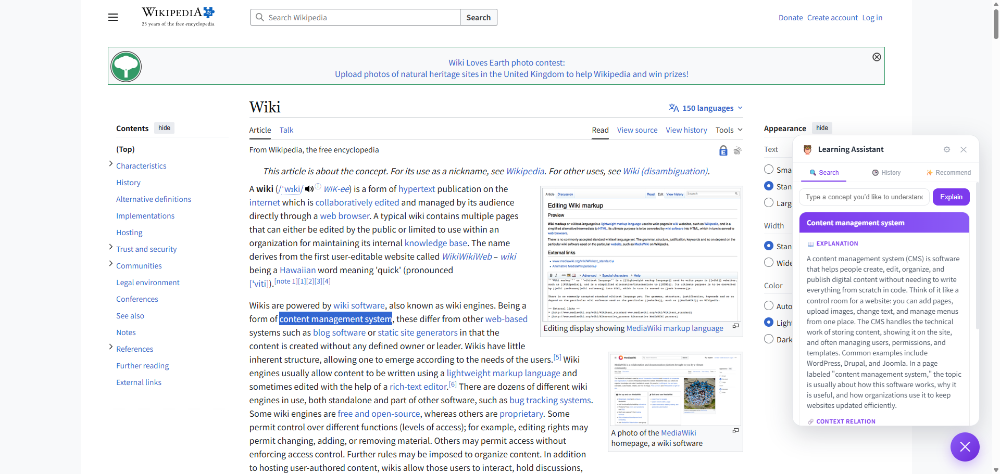
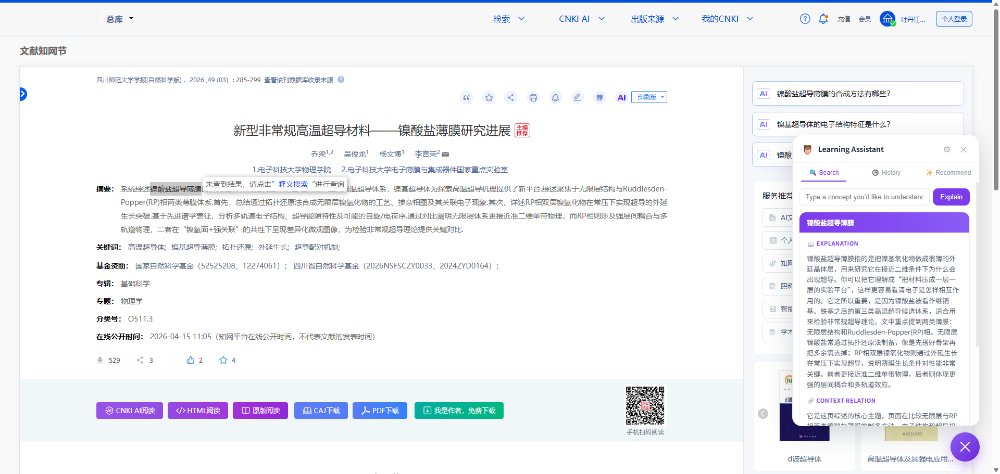
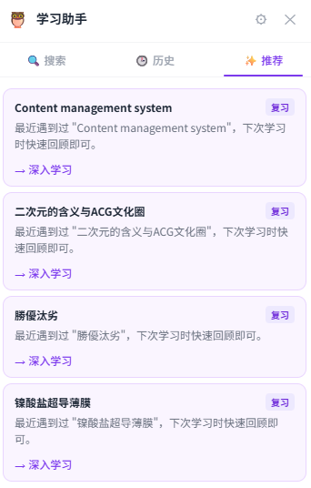
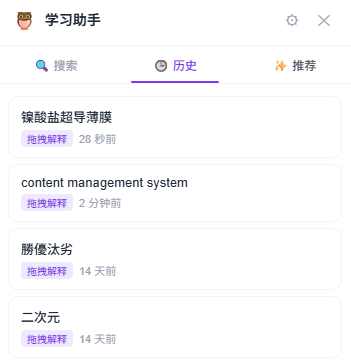
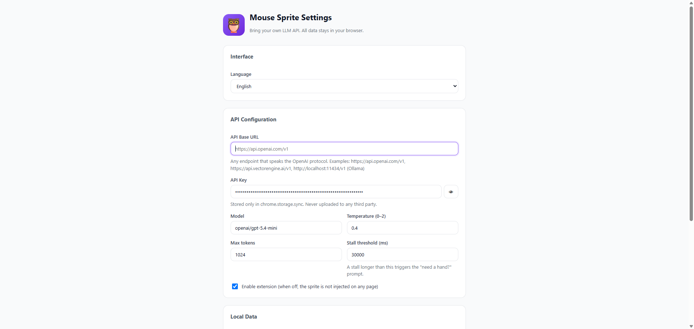
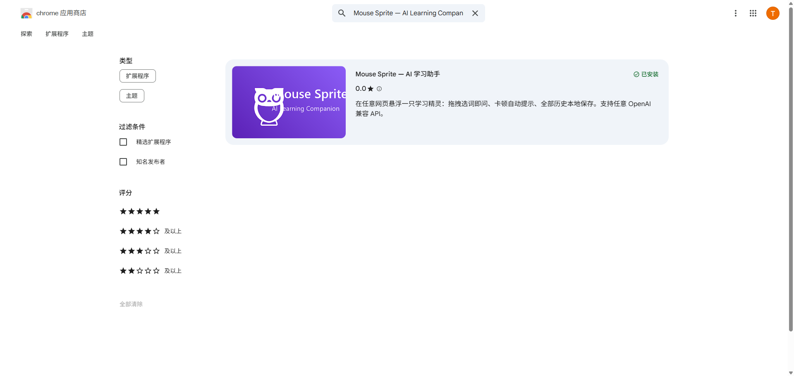

A published Chrome extension — a learning sprite that floats on any page. Drag-select any term and it explains it in context; pause too long and it offers a hand. Every lookup is saved locally and resurfaced for spaced review.
一个已上架的 Chrome 扩展 —— 在任意网页悬浮一只学习精灵。拖拽选中任意词，它就结合上下文解释；停顿太久，它会主动搭把手。每次查询都本地保存，并按间隔复习重新浮现。
Privacy-first by design: bring your own OpenAI-compatible API, and all data stays in chrome.storage — nothing is uploaded to a third party. Works on anything from Wikipedia to dense academic papers.
天生隐私优先：自带 OpenAI 兼容 API，所有数据都留在 chrome.storage，不上传任何第三方。从维基百科到艰深的学术论文，处处可用。





chrome.storage.sync, and a stall threshold triggers the “need a hand?” prompt.
设置 —— 自带大模型。任意 OpenAI 兼容端点（OpenAI、路由、甚至本地 Ollama）；密钥只存在 chrome.storage.sync，停顿阈值触发 “need a hand?” 提示。
